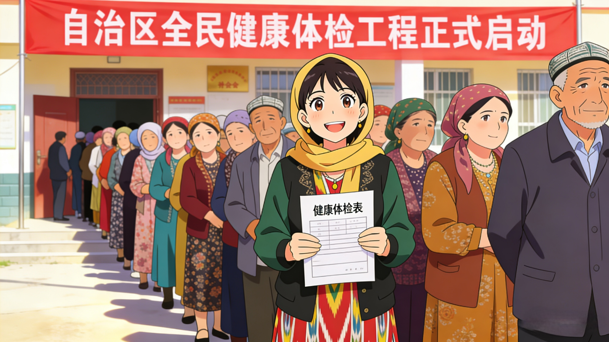
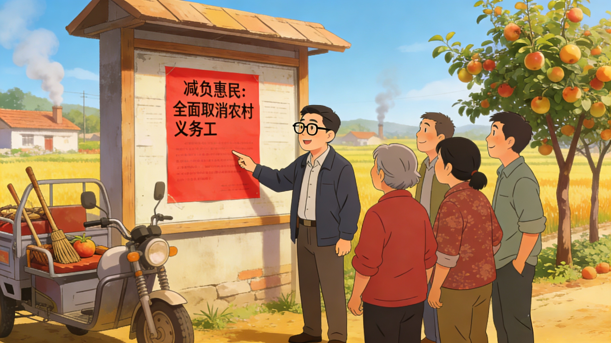
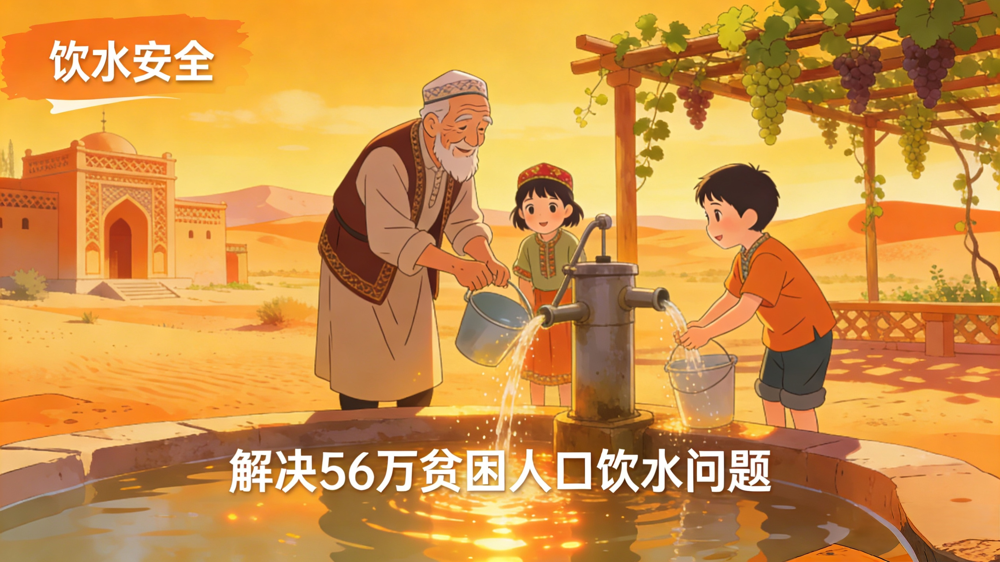
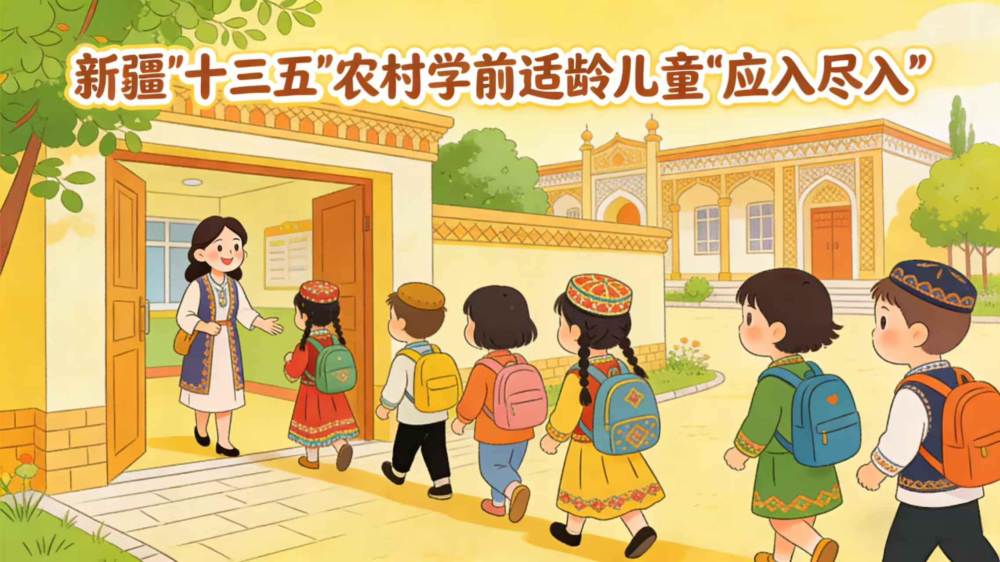
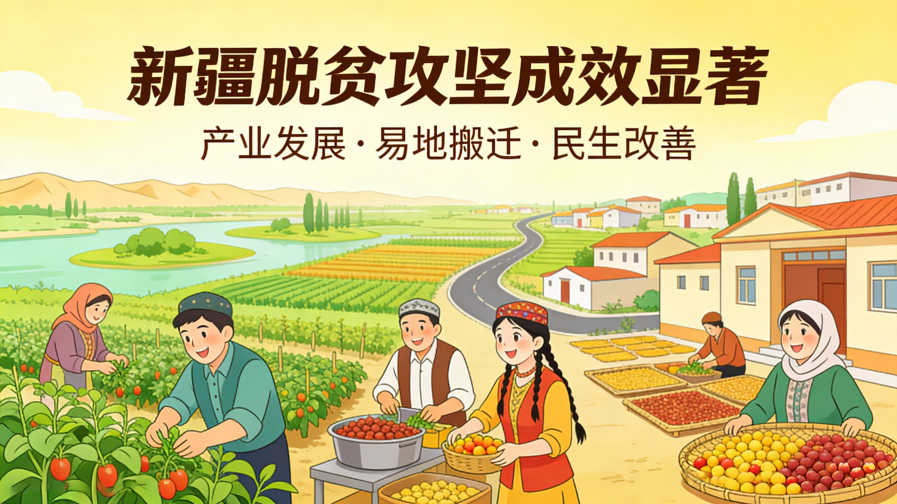
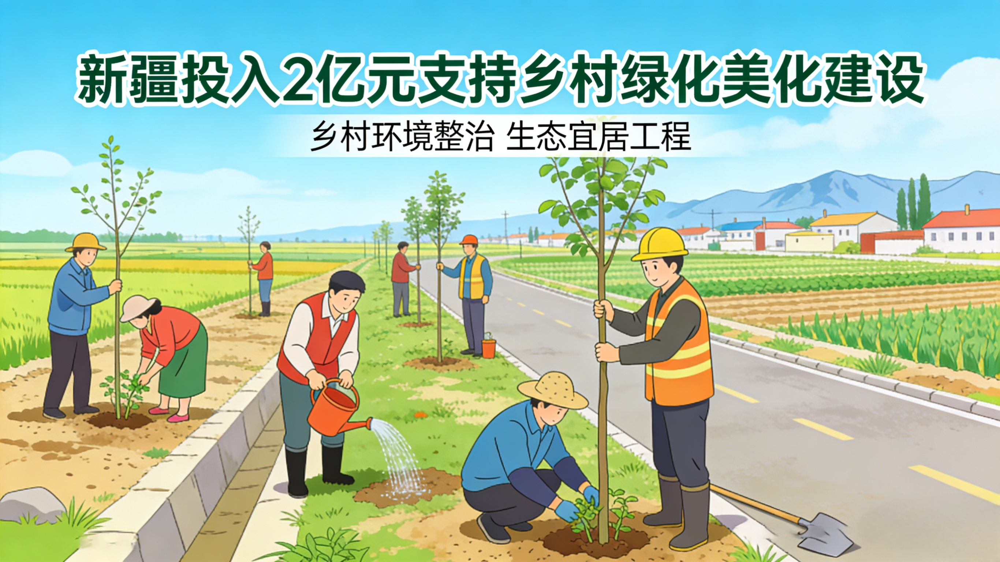
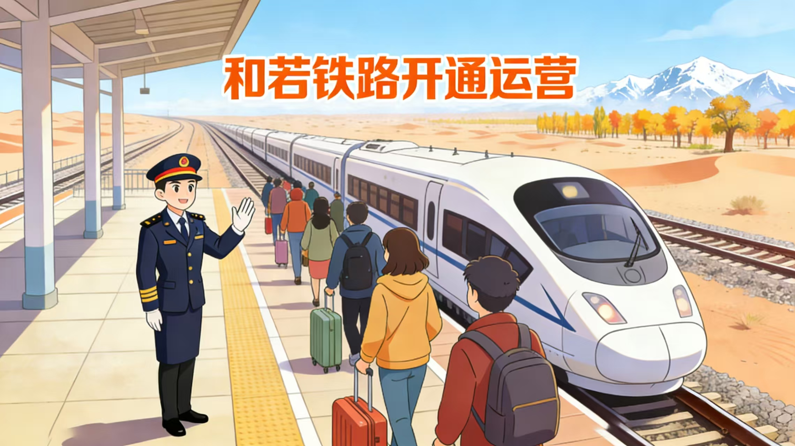
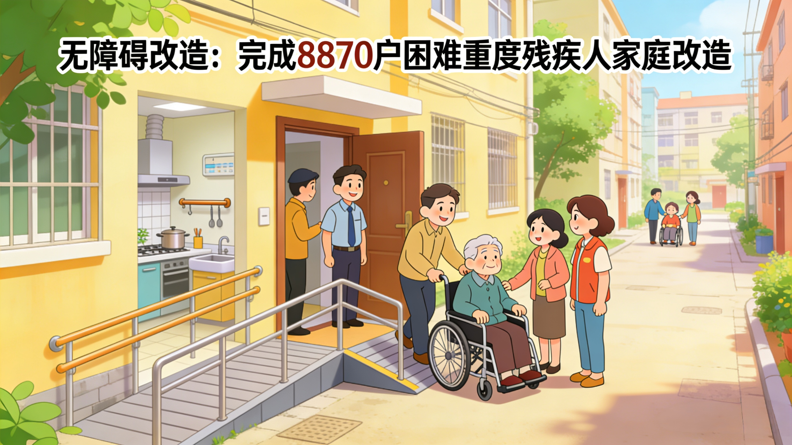
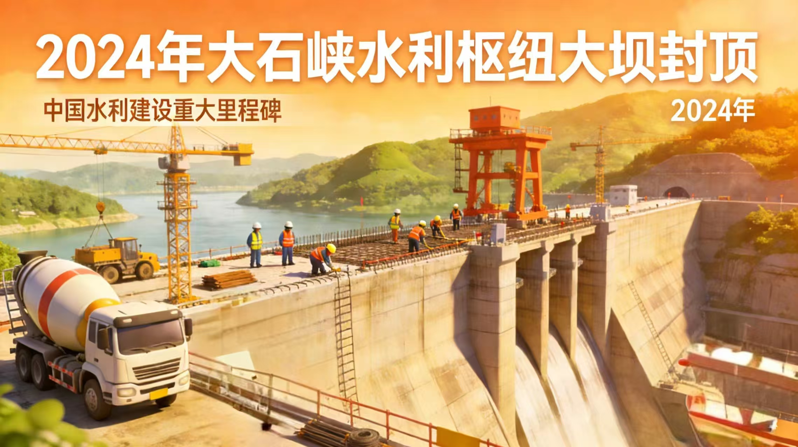
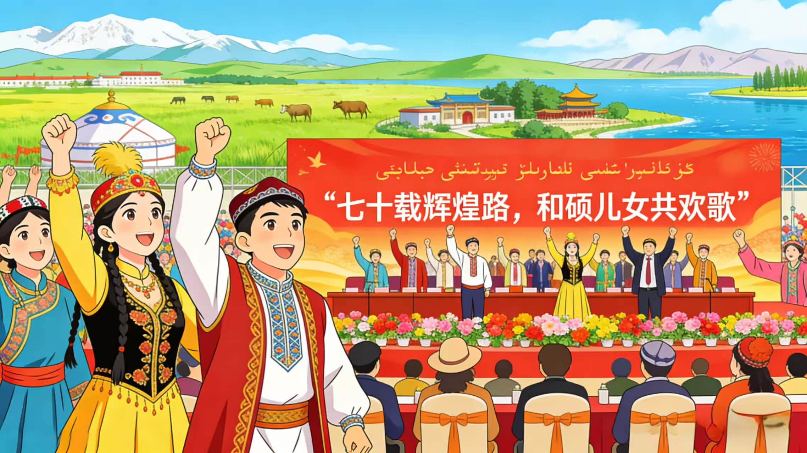

【前言】2026 年，我们站在新疆维吾尔自治区成立70周年的历史节点回望过去十年。2016—2025年，是新疆民生事业全面推进、持续跃升的关键十年。从脱贫攻坚到乡村振兴，从补齐民生短板到推动公共服务提质增效，新疆日报十年报道词频的变迁，正是千万群众生活品质节节攀升的生动写照，也是新疆民生建设扎实推进、温暖前行的真实注脚。
【导读】本H5聚焦新疆十年民生发展脉络，解锁十年辉煌里程碑，从教育发展、就业创业、医疗健康、生活保障、乡村振兴五大维度，细数民生实事落地生根的点滴变化；每一页都是烟火暖意，每一幕都是奋进华章，邀您共赏新疆十年民生答卷。
新疆始终坚持以人民为中心，“十四五”以来，自治区每年将财政支出70%以上投入民生领域，聚焦就业、教育、医疗、社保、住房、乡村振兴等重点领域，把群众的“急难愁盼”变为“幸福清单”。
数据显示，2016年至2025年间，“民生”及关联词汇在权威报道中呈现出高频与稳步增长的态势。特别是2020年脱贫攻坚收官之年与2025年自治区成立70周年之际，词频迎来了两次显著跃升。这一组组上扬的数据曲线，直观反映了惠民工程的落地力度与深切关怀。
讲好“民生”二字，既要见政策力度，更要见生活温度。十年间，新疆日报的报道从不止于宏大叙事，而是落笔于一个个真实可感的生活场景。每一个关键词，都是一份民生承诺；每一篇报道，都是一段幸福足迹。
在各类报道中，深入一线、讲述百姓故事的通讯报道与传递权威声音的消息占据了主导地位，合计占比逾七成。此外，以细腻笔触捕捉温暖瞬间的特写，以及洞察发展脉络的深度调查报告，同样构成了民生报道的重要版图。
从简明扼要的消息，到数据支撑的调查，再到直面基层的专访……不同体裁，同一份初心。
十年间，新疆日报的民生报道覆盖天山南北，从北疆到南疆，从城市到乡村，笔触所至皆是民生冷暖。
我们通过梳理各地州市报道热度，清晰看见新疆民生建设的全域推进轨迹：既聚焦重点区域如南疆四地州的发展，又关注全区各地民生实事落地，让每一个地区、每一位群众的幸福变迁，都被认真记录、真诚呈现。不同地域，同频温暖，这正是新疆民生事业均衡发展的生动写照。
站在十年征程的节点，我们逐载回望、细数荣光，解锁每一年的重磅辉煌成就，见证天山南北日新月异的发展蝶变，感受各族群众步步升温的幸福质感，读懂新时代新疆高质量发展的硬核底气与民生温度。










十年筑梦，就业为先；创业潮涌，技能赋能。回望近十年，新疆始终将就业创业置于发展核心， 以就业稳大局、以创业添活力、以技能强动能、以收入惠民生。
从城镇新增就业年均超46万到农村劳动力外出务工超3000万人次，从“技能照亮前程”行动遍地开花到电商、文旅等新业态创业热潮迭起，就业、创业、技能、收入四词持续领跑民生报道频次。
教育兴则国家兴，教育强则民族强。回望新时代十年非凡征程，新疆始终把教育摆在优先发展的战略位置，深耕民生根基、厚植育人沃土。
教育事业在十年间实现了从“普及”到“优质”的跨越，成为新疆民生改善的重要驱动力。从筑牢基础教育底线、补齐南疆教育短板，到优化高等教育布局、推进职业教育提质，从改善办学条件、建强师资队伍，到深化教育改革、推进教育公平，每一项举措都紧贴群众期盼，每一步跨越都彰显民生温度。
健康是民生之基，守护万家安康是不变的初心使命。梳理十年权威报道轨迹，医疗、医保、体检三大关键词在不同年度高频亮相、热度攀升，清晰勾勒出新疆医疗健康事业的奋进足迹。
从基层诊疗能力不断提升，到医保覆盖范围持续扩面；从全民健康体检常态化落地，到优质医疗资源下沉普惠，每一次词频走高，都对应着一项惠民实事落地，每一轮报道聚焦，都见证着健康保障的迭代升级。
民生无小事，枝叶总关情。新疆始终把群众安危冷暖放在心头，聚焦民生刚需、补齐保障短板，用实打实的举措筑牢生活底线，让发展成果公平惠及各族群众。
梳理十年权威报道轨迹，收入、住房、养老、社保四大关键词在不同年度高频亮相、热度攀升，清晰勾勒出新疆生活保障事业的奋进足迹。
从城乡居民收入稳步增长，到安居工程惠及千家万户；从养老服务体系日趋完善，到社保兜底覆盖全域，每一次词频走高，都对应着一项惠民实事落地，每一轮报道聚焦，都见证着保障水平的迭代升级。
乡村兴则国家兴，乡村强则天下安。新疆从脱贫攻坚迈向乡村振兴，一步一个脚印、一年一个台阶，广袤乡村迎来翻天覆地的深刻变化。乡村从“脱贫摘帽”到“全面振兴”的历史性跨越，记录各族群众在乡村振兴浪潮中安居乐业、增收致富、奔向美好生活的生动实践。
从产业发展到人居环境，从基础设施到公共服务，从乡风文明到治理有效，天山南北的乡村大地处处焕发勃勃生机，一幅产业兴旺、生态宜居、乡风文明、治理有效、生活富裕的壮美画卷徐徐展开。
岁月镌刻奋进足迹，数字见证幸福温度。回望新时代十年征程，民生答卷字字暖心，发展成果声声可鉴，幸福感、获得感两大关键词在权威报道中频次逐年攀升，成为天山南北民生改善最鲜活的注脚、最生动的诠释。
十年栉风沐雨，十年春华秋实。从民生短板补齐到福祉全面提质，从基础保障夯实到幸福质感升级，幸福感、获得感的高频回响，是时代赋予的答卷，更是群众心底的共鸣。
站在新的历史起点，民生之路未有穷期，幸福征程永不止步。未来，新疆将继续坚守利民初心，深耕民生事业，让发展红利持续释放，让各族群众的获得感成色更足、幸福感更可持续、安全感更有保障，在同心筑梦的道路上，续写更多温暖人心的民生华章。